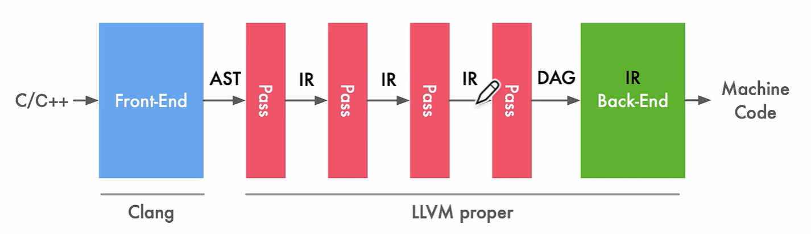

AI编译器相关学习
本文最后更新于：2023年10月18日 上午
参考：
https://github.com/BBuf/tvm_mlir_learn
https://space.bilibili.com/517221395/channel/collectiondetail?sid=857162
1. 编译器相关
编译器（Compiler）和解释器（Interpreter）：
- 编译器：将源代码整体编译为可执行文件（机器码），（可能经过预编译、编译、汇编、链接等环节，统一视作编译器的流程）最后由机器执行，会产生可以重复使用的中间文件和可执行文件
- 解释器：将源代码逐行解释成字节码并直接交由机器执行，不产生其他文件
编译器编译方式：JIT和AOT
- AOT：AheadOfTime即静态编译，源代码先统一编译成机器码，再执行
- JIT：JustInTime即动态编译，相比于传统AOT，JIT可以在程序运行过程中变运行边编译，具体流程可以参考java。注意JIT与解释器的区别，解释器的粒度为一行源代码，而JIT的粒度为一个函数，JIT编译的函数可以重复使用，而解释器每次都要重新解释一遍。
一个GCC的标准编译流程：
- 预处理：处理宏定义、文件包含、条件编译等信息，生成 .i 文件
- 编译：对 .i 文件进行语法分析，优化后生成 .s 汇编文件
- 汇编：将 .s 汇编文件汇编为机器码 .o 文件
- 链接：将程序运行所需要的目标文件、依赖库文件等统一打包链接成一个可执行文件
LLVM在GCC的基础上发展而来，早期苹果使用GCC编，后来由于GCC证书以及苹果的商用需要，只能放弃GCC而单独发展出LLVM，LLVM本质算一个编译器的框架系统，使用模块化的方式，将编译器的前端、优化器、后端等模块分开，可以根据需要进行组合，比如目前主流的Clang就是LLVM的前端，而LLVM的后端可以生成多种平台的机器码，LLVM的优化器也可以单独使用，这样就可以根据需要进行组合，而不是像GCC那样，前端、优化器、后端都是一体的，不可分割。
PASS：编译器对源代码进行完整的扫描，进行优化和分析的步骤
IR：Intermediate Representation 中间表达
编译器基本结构（主要是LLVM，GCC分的没有这么明确）
- Front End：词法分析、语法分析，将源代码转换为抽象语法树（AST），LLVM使用Clang作为前端
- Optimizer：优化，将IR进行优化，使代码更高效（PASS在这个地方）
- Back End：代码生成，将IR转换为目标代码（机器码）

相关 Chris Lattner：The Golden Age of Compilers
AI编译器是介于机器学习框架与硬件中间的一层，用于解决众多框架与多种硬件之间的适配问题，主要架构
- Front-end：计算图转换，将不同框架下的源代码输出为Graph IR等高阶IR（HLIR），重点在于抽象出硬件无关的计算和控制流程，以及数据张量、算子的支持
- Optimizer：对计算图进行一些算子融合、自动微分、并行切分、剪枝量化等优化，将高阶IR转换为低阶IR（LLIR）
- Back-end：针对特定的机器，将低级IR转换为LLVM IR，再利用LLVM基础结构生成优化的机器码
AI编译器相关学习
http://example.com/2023/10/16/AI编译器相关学习/